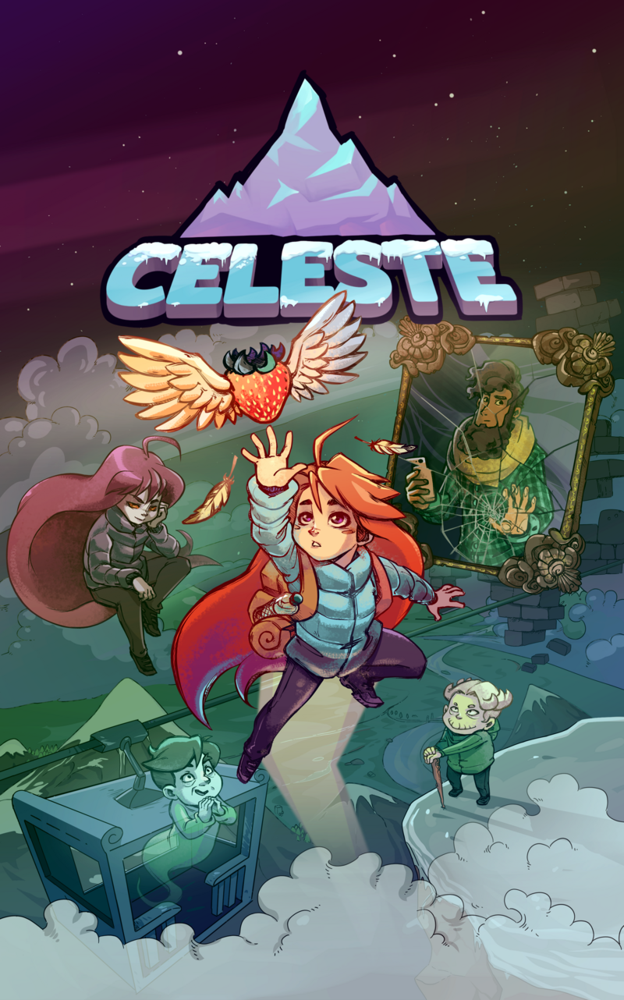

Celeste is a cool platformer with an interesting story that involves mental health and overcoming the difficulties dealing with it. On this website I would like to share some stuff that's great about the game as well as my experience with it. Celeste has a wonder story of overcoming anxiety, depression and self doubt in order to achieve your goals. With this website I hope to cover as much as I can and hopefully inspire you to give the game a try yourself.
